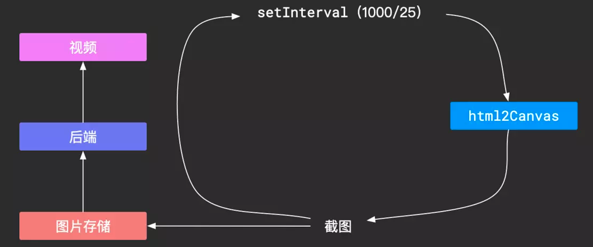
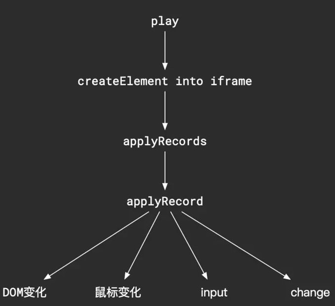

摘要： 很有意思的操作...
Fundebug经授权转载，版权归原作者所有。
在看到评论后，突然意识到自己没有提前说明，本文可以说是一篇调研学习文，是我自己感觉可行的一套方案，后续会去读读已经开源的一些类似的代码库，补足自己遗漏的一些细节，所以大家可以当作学习文，生产环境慎用。
如果你的应用有接入到web apm系统中，那么你可能就知道apm系统能帮你捕获到页面发生的未捕获错误，给出错误栈，帮助你定位到BUG。但是，有些时候，当你不知道用户的具体操作时，是没有办法重现这个错误的，这时候，如果有操作录屏，你就可以清楚地了解到用户的操作路径，从而复现这个BUG并且修复。
这个思路比较简单，就是利用canvas去画网页内容，比较有名的库有：html2canvas，这个库的简单原理是：
这个实现是比较复杂的，但是我们可以直接使用，所以我们可以获取到我们想要的网页截图。
为了使得生成的视频较为流畅，我们一秒中需要生成大约25帧，也就是需要25张截图，思路流程图如下：

但是，这个思路有个最致命的不足：为了视频流畅，一秒中我们需要25张图，一张图300KB，当我们需要30秒的视频时，图的大小总共为220M，这么大的网络开销明显不行。
为了降低网络开销，我们换个思路，我们在最开始的页面基础上，记录下一步步操作，在我们需要"播放"的时候，按照顺序应用这些操作，这样我们就能看到页面的变化了。这个思路把鼠标操作和DOM变化分开：
鼠标变化：
DOM变化：
当然这个说明是比较简略的，鼠标的记录比较简单，我们不展开讲，主要说明一下DOM监控的实现思路。
首先你可能会想到，要实现页面全量快照，可以直接使用outerHTML
const content = document.documentElement.outerHTML;这样就简单记录了页面的所有DOM，你只需要首先给DOM增加标记id，然后得到outerHTML，然后去除JS脚本。
但是，这里有个问题，使用outerHTML记录的DOM会将把临近的两个TextNode合并为一个节点，而我们后续监控DOM变化时会使用MutationObserver，此时你需要大量的处理来兼容这种TextNode的合并，不然你在还原操作的时候无法定位到操作的目标节点。
那么，我们有办法保持页面DOM的原有结构吗？
答案是肯定的，在这里我们使用Virtual DOM来记录DOM结构，把documentElement变成Virtual DOM，记录下来，后面还原的时候重新生成DOM即可。
我们在这里只需要关心两种Node类型：Node.TEXT_NODE和Node.ELEMENT_NODE。同时，要注意，SVG和SVG子元素的创建需要使用API：createElementNS，所以，我们在记录Virtual DOM的时候，需要注意namespace的记录，上代码：
const SVG_NAMESPACE = 'http://www.w3.org/2000/svg';
const XML_NAMESPACES = ['xmlns', 'xmlns:svg', 'xmlns:xlink'];
function createVirtualDom(element, isSVG = false) {
switch (element.nodeType) {
case Node.TEXT_NODE:
return createVirtualText(element);
case Node.ELEMENT_NODE:
return createVirtualElement(element, isSVG || element.tagName.toLowerCase() === 'svg');
default:
return null;
}
}
function createVirtualText(element) {
const vText = {
text: element.nodeValue,
type: 'VirtualText',
};
if (typeof element.__flow !== 'undefined') {
vText.__flow = element.__flow;
}
return vText;
}
function createVirtualElement(element, isSVG = false) {
const tagName = element.tagName.toLowerCase();
const children = getNodeChildren(element, isSVG);
const { attr, namespace } = getNodeAttributes(element, isSVG);
const vElement = {
tagName, type: 'VirtualElement', children, attributes: attr, namespace,
};
if (typeof element.__flow !== 'undefined') {
vElement.__flow = element.__flow;
}
return vElement;
}
function getNodeChildren(element, isSVG = false) {
const childNodes = element.childNodes ? [...element.childNodes] : [];
const children = [];
childNodes.forEach((cnode) => {
children.push(createVirtualDom(cnode, isSVG));
});
return children.filter(c => !!c);
}
function getNodeAttributes(element, isSVG = false) {
const attributes = element.attributes ? [...element.attributes] : [];
const attr = {};
let namespace;
attributes.forEach(({ nodeName, nodeValue }) => {
attr[nodeName] = nodeValue;
if (XML_NAMESPACES.includes(nodeName)) {
namespace = nodeValue;
} else if (isSVG) {
namespace = SVG_NAMESPACE;
}
});
return { attr, namespace };
}通过以上代码，我们可以将整个documentElement转化为Virtual DOM，其中__flow用来记录一些参数，包括标记ID等，Virtual Node记录了：type、attributes、children、namespace。
将Virtual DOM还原为DOM的时候就比较简单了，只需要递归创建DOM即可，其中nodeFilter是为了过滤script元素，因为我们不需要JS脚本的执行。
function createElement(vdom, nodeFilter = () => true) {
let node;
if (vdom.type === 'VirtualText') {
node = document.createTextNode(vdom.text);
} else {
node = typeof vdom.namespace === 'undefined'
? document.createElement(vdom.tagName)
: document.createElementNS(vdom.namespace, vdom.tagName);
for (let name in vdom.attributes) {
node.setAttribute(name, vdom.attributes[name]);
}
vdom.children.forEach((cnode) => {
const childNode = createElement(cnode, nodeFilter);
if (childNode && nodeFilter(childNode)) {
node.appendChild(childNode);
}
});
}
if (vdom.__flow) {
node.__flow = vdom.__flow;
}
return node;
}在这里，我们使用了API：MutationObserver，更值得高兴的是，这个API是所有浏览器都兼容的，所以我们可以大胆使用。
使用MutationObserver：
const options = {
childList: true, // 是否观察子节点的变动
subtree: true, // 是否观察所有后代节点的变动
attributes: true, // 是否观察属性的变动
attributeOldValue: true, // 是否观察属性的变动的旧值
characterData: true, // 是否节点内容或节点文本的变动
characterDataOldValue: true, // 是否节点内容或节点文本的变动的旧值
// attributeFilter: ['class', 'src'] 不在此数组中的属性变化时将被忽略
};
const observer = new MutationObserver((mutationList) => {
// mutationList: array of mutation
});
observer.observe(document.documentElement, options);使用起来很简单，你只需要指定一个根节点和需要监控的一些选项，那么当DOM变化时，在callback函数中就会有一个mutationList，这是一个DOM的变化列表，其中mutation的结构大概为：
{
type: 'childList', // or characterData、attributes
target: <DOM>,
// other params
}我们使用一个数组来存放mutation，具体的callback为：
const onMutationChange = (mutationsList) => {
const getFlowId = (node) => {
if (node) {
// 新插入的DOM没有标记，所以这里需要兼容
if (!node.__flow) node.__flow = { id: uuid() };
return node.__flow.id;
}
};
mutationsList.forEach((mutation) => {
const { target, type, attributeName } = mutation;
const record = {
type,
target: getFlowId(target),
};
switch (type) {
case 'characterData':
record.value = target.nodeValue;
break;
case 'attributes':
record.attributeName = attributeName;
record.attributeValue = target.getAttribute(attributeName);
break;
case 'childList':
record.removedNodes = [...mutation.removedNodes].map(n => getFlowId(n));
record.addedNodes = [...mutation.addedNodes].map((n) => {
const snapshot = this.takeSnapshot(n);
return {
...snapshot,
nextSibling: getFlowId(n.nextSibling),
previousSibling: getFlowId(n.previousSibling)
};
});
break;
}
this.records.push(record);
});
}
function takeSnapshot(node, options = {}) {
this.markNodes(node);
const snapshot = {
vdom: createVirtualDom(node),
};
if (options.doctype === true) {
snapshot.doctype = document.doctype.name;
snapshot.clientWidth = document.body.clientWidth;
snapshot.clientHeight = document.body.clientHeight;
}
return snapshot;
}这里面只需要注意，当你处理新增DOM的时候，你需要一次增量的快照，这里仍然使用Virtual DOM来记录，在后面播放的时候，仍然生成DOM，插入到父元素即可，所以这里需要参照DOM，也就是兄弟节点。
上面的MutationObserver并不能监控到input等元素的值变化，所以我们需要对表单元素的值进行特殊处理。
MDN文档：developer.mozilla.org/en-US/docs/…
事件对象：select、input，textarea
window.addEventListener('input', this.onFormInput, true);
onFormInput = (event) => {
const target = event.target;
if (
target &&
target.__flow &&
['select', 'textarea', 'input'].includes(target.tagName.toLowerCase())
) {
this.records.push({
type: 'input',
target: target.__flow.id,
value: target.value,
});
}
}在window上使用捕获来捕获事件，后面也是这样处理的，这样做的原因是我们是可能并经常在冒泡阶段阻止冒泡来实现一些功能，所以使用捕获可以减少事件丢失，另外，像scroll事件是不会冒泡的，必须使用捕获。
MDN文档：developer.mozilla.org/en-US/docs/…
input事件没法满足type为checkbox和radio的监控，所以需要借助onchange事件来监控
window.addEventListener('change', this.onFormChange, true);
onFormChange = (event) => {
const target = event.target;
if (target && target.__flow) {
if (
target.tagName.toLowerCase() === 'input' &&
['checkbox', 'radio'].includes(target.getAttribute('type'))
) {
this.records.push({
type: 'checked',
target: target.__flow.id,
checked: target.checked,
});
}
}
}MDN文档：developer.mozilla.org/en-US/docs/…
window.addEventListener('focus', this.onFormFocus, true);
onFormFocus = (event) => {
const target = event.target;
if (target && target.__flow) {
this.records.push({
type: 'focus',
target: target.__flow.id,
});
}
}MDN文档：developer.mozilla.org/en-US/docs/…
window.addEventListener('blur', this.onFormBlur, true);
onFormBlur = (event) => {
const target = event.target;
if (target && target.__flow) {
this.records.push({
type: 'blur',
target: target.__flow.id,
});
}
}这里指audio和video，类似上面的表单元素，可以监听onplay、onpause事件、timeupdate、volumechange等等事件，然后存入records
canvas内容变化没有抛出事件，所以我们可以：
canvas监听研究没有很深入，需要进一步深入研究

思路比较简单，就是从后端拿到一些信息：
利用这些信息，你就可以首先生成页面DOM，其中包括过滤script标签，然后创建iframe，append到一个容器中，其中使用一个map来存储DOM
function play(options = {}) {
const { container, records = [], snapshot ={} } = options;
const { vdom, doctype, clientHeight, clientWidth } = snapshot;
this.nodeCache = {};
this.records = records;
this.container = container;
this.snapshot = snapshot;
this.iframe = document.createElement('iframe');
const documentElement = createElement(vdom, (node) => {
// 缓存DOM
const flowId = node.__flow && node.__flow.id;
if (flowId) {
this.nodeCache[flowId] = node;
}
// 过滤script
return !(node.nodeType === Node.ELEMENT_NODE && node.tagName.toLowerCase() === 'script');
});
this.iframe.style.width = `${clientWidth}px`;
this.iframe.style.height = `${clientHeight}px`;
container.appendChild(iframe);
const doc = iframe.contentDocument;
this.iframeDocument = doc;
doc.open();
doc.write(`<!doctype ${doctype}><html><head></head><body></body></html>`);
doc.close();
doc.replaceChild(documentElement, doc.documentElement);
this.execRecords();
}
function execRecords(preDuration = 0) {
const record = this.records.shift();
let node;
if (record) {
setTimeout(() => {
switch (record.type) {
// 'childList'、'characterData'、
// 'attributes'、'input'、'checked'、
// 'focus'、'blur'、'play''pause'等事件的处理
}
this.execRecords(record.duration);
}, record.duration - preDuration)
}
}上面的duration在上文中省略了，这个你可以根据自己的优化来做播放的流畅度，看是多个record作为一帧还是原本呈现。
Fundebug专注于JavaScript、微信小程序、微信小游戏、支付宝小程序、React Native、Node.js和Java线上应用实时BUG监控。 自从2016年双十一正式上线，Fundebug累计处理了20亿+错误事件，付费客户有阳光保险、核桃编程、荔枝FM、掌门1对1、微脉、青团社等众多品牌企业。欢迎大家免费试用！